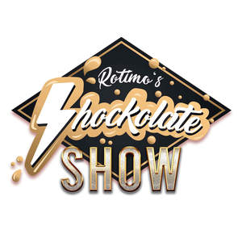

Trade Mark Journal No.2025/018 2 May 2025
UK00004189224 15 April 2025 (16,35,41)

- Class 16
- Event albums; Printed event admission tickets; Tickets; Events albums; Souvenir event programs; Event programs.
- Class 35
- Promotion of musical concerts; Promotion [advertising] of concerts; Event marketing.
- Class 41
- Concert booking; Music concert services; Musical concert services; Concert services; Music concerts; Live musical concerts; Singing concert services; Presentation of musical concerts; Live music concerts; Presentation of music concerts; Rental of concert halls; Reservation services for concert and theatre tickets; Theatre and concert tickets reservation services; Presentation of concerts; Organisation of music concerts; Organisation of musical concerts; Production of music concerts; Booking agencies for concert tickets; Reservation services for concert tickets; Concert booking services; Pop music concerts (Organisation of -); Musical concerts by radio; Ticket reservation services (Concert -); Musical concerts by television; Arranging and conducting of music concerts; Arranging of concerts; Live musical theater performances; Live band performances; Band performances (Live -); Organisation of concerts; Entertainment services in the form of concert performances; Live performances by a musical band; Live music performances; Presentation of live performances by musical bands; Management of concerts; Live musical performances; Live performances by a musical bands; Music performances; Ticket reservation and booking services for music concerts; Booking of seats for concerts; Presentation of live performances by a musical group; Presentation of orchestra performances; Organisation of live musical performances; Performance of music and singing; Entertainment in the nature of symphony orchestra performances; Performing of music and singing; Performance of music; Theater performances; Arranging of music performances; Live band performance services; Arranging and conducting of concerts; Conducting of concerts (Arranging and -); Musical floor shows provided at performance venues; Presentation of live dance performances; Musical performances; Presentation of live performances by rock groups; Live music shows; Entertainment in the nature of live performances by musical bands; Presentation of live Christmas musical productions; Music festival services; Presentation of musical performances; Theatre performances; Presentation of live show performances; Provision of live musical performances; Theatrical shows provided at performance venues; Presentation of live comedy performances; Live performances by rock groups; Presentation of live entertainment performances; Performances (Presentation of live -); Live performances (Presentation of -); Presentation of live performances; Arranging, conducting and organisation of concerts; Performance of dance, music and drama; Theatrical floor shows provided at performance venues; Organisation of musical performances; Symphony orchestra services; Entertainment in the nature of orchestra performances; Provision of facilities for live band performances; Live stage shows; Recording of music; Music recording; Production of revue shows before live audiences; Live dance exhibitions; Organisation of live performances; Presentation of musical performance; Conducting of live entertainment events; Presentation of circus performances; Arranging of music shows; Entertainment in the nature of live performances by rock groups; Performance of musical programmes; Arranging and presenting of live performances; Circus performances; Booking of performing artists for events (services of a promoter); Organising of festivals relating to jazz music; Booking of seats for shows and booking of theatre tickets; Musical events (Arranging of -); Arranging of musical events; Entertainment in the nature of live dance performances; Planning of plays or musical shows; Arranging and conducting of live entertainment events; Production of live performances; Entertainment services performed by a musical group; Presentation of live entertainment events; Arranging for ticket reservations for shows and other entertainment events; Organisation of ice skating shows for live audiences; Production of music shows; Entertainment by means of concerts; Direction of music performances; Entertainment services in the form of musical vocal group performances; Live music services; Production of stage performances; Presentation of theatrical performances; Theatrical performances; Entertainment services in the form of musical group performances; Presentation of recitals; Music performance services; Artistic management of music venues; Conducting of performing arts festivals; Rehearsal [recording] studio services; Booking agencies for theatre tickets; Presentation of live comedy shows; Music recording studio services; Provision of live music; Production of entertainment shows featuring singers; Production of musical recordings; Production of live entertainment events; Organising of stage shows; Organisation of musical events; Production of entertainment shows featuring dancers and singers; Organising of festivals; Organisation of festivals; Conducting of film festivals; Entertainment in the nature of ethnic festival; Festivals (Organisation of -) for entertainment purposes; Festivals (Organisation of -) for cultural purposes; Arranging of festivals for cultural purposes; Production of sporting events for film; Arranging of festivals for entertainment purposes; Wedding celebrations (Organisation of entertainment for -); Organising community cultural events; Organising of theatre productions; Organizing cultural and arts events; Organisation of entertainment and cultural events; Organising community sporting events; Dance events; Festivals (Organisation of -) for recreational purposes; Organising of entertainment competitions; Organising of competitions for entertainment; Competitions (Organising of entertainment -); Organizing community sporting and cultural events; Festivals (Organisation of -) for educational purposes; Organisation of musical competitions; Organising dancing events; Entertainment in the nature of dinner theater productions; Entertainment in the nature of dance performances; Organisation of entertainment activities for summer camps; Organisation of cultural activities for summer camps; Arranging of festivals for training purposes; Organisation, production and presentation of theatrical performances; Ticket reservation for cultural events; Organisation of entertainment events; Exhibition of cine films; Organisation of musical entertainment; Consultancy on film and music production; Organization of cosplay entertainment events; Arranging of festivals for educational purposes; Entertainment services in the nature of live performances of roller skating exhibitions and competitions; Preparing subtitles for live theatrical events; Organisation of cultural events; Entertainment in the nature of theater productions; Circus productions; Organising of sports competitions and events; Production of sporting events; Theatre entertainment; Organising of football events; Production of esports events; Production of sporting events for radio; Production of theatrical performances; Movie theatre presentations; Organising of sporting events; Organising sporting events; Organisation of sporting events and competitions; Conducting of cultural events; Organisation of entertainment competitions; Hosting [organising] awards; Production of music; Music production; Preparation of entertainment programmes for the cinema; Organising of entertainment; Dancing competitions (Organising of -); Organising of dancing competitions; Booking of seats for entertainment events; Organising of sporting events, competitions and sporting tournaments; Theatre productions; Rental of costumes [theatrical or masquerade]; Production of TV shows; Auditioning for tv game shows; Satellite television shows; Production of radio and television shows and programmes; Provision of television news shows; Production of television game shows; Live comedy shows; Entertainment in the nature of television news shows; Television show production; Game shows; Planning of movie shows; Production of shows; Shows (Production of -); Organisation of comedy shows; Production of comedy shows; Production of live shows; Shows and films production; Directing of shows; Arranging of entertainment shows; Organisation of live shows; Satellite television series; Production of animated programmes for use on television and cable; Organisation of shows; Tv entertainment services; Provision of live shows; Organization of shows; Direction of theatre shows; Planning of shows; Television entertainment; Television and radio entertainment; Radio and television entertainment; Auditioning for tv talent contests; Conducting entertainment exhibitions in magic shows; Directing of musical shows; Entertainment services for producing live shows; Production of entertainment shows featuring dancers; Production of live television programmes for entertainment; Provision of non-downloadable films and television programs via pay-per-view television channels; Cable television programmes (Production of -); Directing of theatrical shows; Magic shows (Presentation of -); Production of talent shows; Production of live television programmes; Entertainment in the nature of fashion shows; Production of cable television programs; Presentation of television programmes; Scheduling of radio and television programmes; Production of theatrical shows; Production of entertainment shows featuring instrumentalists; Production of radio and television programmes; Radio and television programmes (Production of -); Production of radio and of television programmes; Production of television or radio programmes; Production of television and radio programmes; Television programmes (Production of radio and -); Production of television entertainment programmes; Provision of non-downloadable films and television programs via pay television; Production of stage shows; Production of television and radio programs; Production of radio or television programs; Production of radio and television programs; Editing of television programmes; Rental of television programmes; Preparation of radio and television programmes; Booking of seats for shows; Organisation and presentation of shows; Entertainment in the nature of magic shows; Entertainment provided by cable television.
ROTIMO LTD